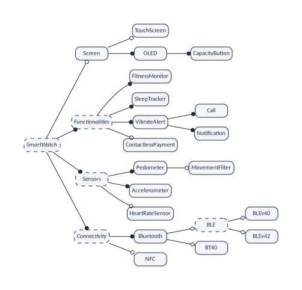
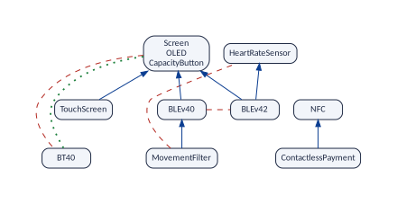

variplex takes a variability model and computes, with a SAT solver, every relationship between two of its features that holds in all its valid configurations: which features require others, which exclude each other, and of which two every product has at least one. More than a hundred functions then answer questions about those graphs: what each feature weighs, how the model is layered, where its conflicts come from, which features can go together, how much of the model a test sample covers, which patterns recur, and how the model changes from version to version. Every function takes a model and returns a tibble.
This vignette explains what variplex finds and why it is worth the time of the solver, introduces the example that all the vignettes use, and makes a first run. The other vignettes go through the results and the questions one by one:
| Vignette | What it covers |
|---|---|
| The graphs and the files | Every result of a run, on the example: core and dead
features, the three graphs, atomic sets, the minimal form, the kernel,
the reports, checking, explaining and comparing versions, and the
options of vp_generate(). |
| Reading and drawing | Reading the results into R, the parts of a model, subsets, histories, and drawing the graphs. |
| Features, hierarchy and the whole model | Measuring each feature; layers, chains, the skeleton and the feature tree; the whole model in numbers. |
| Conflicts and configuration | Where conflicts come from and how they group; what a choice forces, what can go together, the kernel. |
| Teams and testing | Splitting the configuration among teams; covering samples of configurations. |
| Patterns and statistics | Triangles, communities, robustness, power laws, baselines, independent parts. |
| Following a model through time | Comparing versions and whole histories. |
| Limits and theory | What the graphs cannot see, how much of a model they leave out, features that are more than yes or no, and the proofs. |
What variplex does
Product lines, features and configurations
Many products come in variants. A car has an engine that is petrol, diesel or electric; it may or may not have a sunroof. A fitness band is sold with or without a screen. The Linux kernel has more than ten thousand switches. A family of products like these, built from a common set of parts, is a software product line, and the document that describes the family is a variability model. The best-known kind of variability model is the feature model Czarnecki and Wąsowski (2007); Benavides et al. (2010). It lists
- the features: the characteristics that a product may or may not have, and
- the constraints: which features need each other, and which cannot go together.
A configuration is a selection of features. It is valid when it respects all the constraints, and each valid configuration describes one product of the line.
Feature or option? Both words name the same thing.
The product-line community says feature. The world of
configurable systems, such as the Linux kernel, says configuration
option, or just option. These vignettes say
feature for their example, which is a feature model, and
option when they talk about systems like Linux. The engine of
variplex says option in its messages and reports: you will meet
the class OPTION in the report of a run.
The problem: constraints have consequences
Constraints are written one at a time, by different people, at different moments. But constraints chain. If A needs B, and B needs C, then A needs C, and nobody wrote that down. If A needs B, and B cannot go with D, then A cannot go with D either. In a model with thousands of features these hidden consequences are everywhere, and no one can find them by reading.
The constraints you wrote are the visible part. Their consequences are the part under water, and it is much bigger. variplex shows you all of it.
What variplex finds
variplex reads a model and finds every relationship between two features that holds in all its valid configurations Heradio et al. (2026). That is what strong means: a relationship is strong when it holds in every valid configuration, not only in some of them. Because each one involves two features, these are binary relationships. The name comes from software packages, where strong dependencies and strong conflicts were first studied Abate et al. (2009); Di Cosmo and Boender (2010). On the way, variplex also finds two facts about single features:
| Relationship or fact | Meaning | Where it is |
|---|---|---|
| A requires B | Every valid configuration that has A also has B. | the requires graph |
| A excludes B | No valid configuration has both A and B. | the excludes graph |
| At least one of A, B | No valid configuration lacks both. | the at-least-one graph |
| A is core | Every valid configuration has A. | the list of core features |
| A is dead | No valid configuration has A: something is wrong with the model. | the list of dead features |
The relationships are written as graphs: drawings made of dots (the features) joined by arrows or lines (the relationships). A graph is easy to draw, easy to query, and every tool for network analysis can read it. The graphs are complete: they hold everything that follows from chaining the constraints, not only what somebody wrote.
Everything variplex finds is true. But a model can also have rules that tie three or more features at once, such as “a band with Bluetooth Low Energy has version 4.0 or 4.2”. Such a rule is no relationship between two features, so it is in none of the graphs, and every function of the package inherits this blind spot. Each function documents what it means for its answers, and the vignette Limits and theory explains it in full.
Why it pays off
Finding every relationship is not free. For each feature that can vary, variplex asks a solver what selecting it forces and what it forbids, and each of these questions is a series of calls to a SAT solver, which copes well even with very large models Mendonça et al. (2009); Liang et al. (2015). For the example of these vignettes that is 11 questions and a fraction of a second. For the variability model of Linux 3.13 it is 7,100 questions, which took 3.6 minutes with 8 threads (10 minutes with the at-least-one graph, which doubles the questions, and the kernel).
That cost is paid once. Afterwards the answers are in the graphs, and questions about the model are answered by looking at them, without a solver. Asked one by one, the same questions would need a solver each time: Linux 3.13 has 7,100 configuration options that can vary, so 25,201,450 pairs of options and 50,402,900 questions of the kind “does A require B?”. And some questions cannot be asked one pair at a time, because they are about all the pairs at once: which features everything else depends on, which ones can be added to any product, what changed between two versions; the network analysis of these graphs Sánchez et al. (2026) is made of such questions.
Two ways in
vp_generate() accepts two kinds of input:
- a feature model written in UVL, the Universal Variability Language, which variplex translates into a logic formula by itself;
- the logic formula of a variability model written in any other language, in DIMACS, the standard format of logic solvers. The variability model of the Linux kernel, for instance, is written in the Kconfig language, and tools such as KMax, KConfigReader or KconfigSampler translate it into a formula Kuiter et al. (2026); TraVarT does the same for feature models of other notations. Any variability language whose models can be translated into propositional logic can be analysed this way: the dataset published with Strong4VM Heradio et al. (2026) has 5,709 such formulas, of Linux, BusyBox, eCos, automotive product lines and many more systems.
From the formula on, the work is the same: the variables of the formula are sorted into features and the helper variables that translations need; then, for each feature, a solver is asked “if this feature is selected, what else is forced, and what becomes impossible?”; the answers, checked and summarised, are the graphs. These vignettes use a model written in UVL because it is short and easy to read; everything works the same for a formula, and the vignette The graphs and the files says what is special about formulas made by other tools.
The example: the Mi Band 3
The example of the vignettes is a model of a fitness band, the Mi
Band 3. It comes with the package, as do the other examples
(vp_example() lists them). It is written in UVL, a plain
text format:
band_file <- vp_example("miband3_realized.uvl")
cat(readLines(band_file), sep = "\n")
#> namespace SmartWatch
#>
#> features
#> SmartWatch {abstract true}
#> optional
#> Screen
#> optional
#> TouchScreen
#> mandatory
#> OLED
#> mandatory
#> CapacityButton
#> mandatory
#> Functionalities {abstract true}
#> mandatory
#> FitnessMonitor
#> SleepTracker
#> VibrateAlert
#> mandatory
#> Call
#> Notification
#> optional
#> ContactlessPayment
#> Sensors {abstract true}
#> mandatory
#> Pedometer
#> optional
#> MovementFilter
#> Accelerometer
#> optional
#> HeartRateSensor
#> Connectivity {abstract true}
#> mandatory
#> Bluetooth
#> alternative
#> BLE {abstract true}
#> alternative
#> BLEv40
#> BLEv42
#> BT40
#> optional
#> NFC
#>
#> constraints
#> MovementFilter => !HeartRateSensor & BLEv40
#> BLE => HeartRateSensor | MovementFilter
#> ContactlessPayment => NFC
#> !Screen => BT40
#> BT40 => !ScreenReading the model
The first part, features, is a tree. Indentation says
who is the parent of whom. The words mandatory,
optional and alternative say how the children
hang from their parent:
mandatory |
If the parent is selected, the child is selected too. |
optional |
If the parent is selected, the child may be selected or not. |
alternative |
If the parent is selected, exactly one of these children is. |
or |
If the parent is selected, at least one of these children is. (Not used in this model.) |
In every case, a child can only be selected if its parent is.
Abstract features. Some features are marked
{abstract true}. An abstract feature is
not a part of the product: it only gives the model its shape Thüm et al. (2011). It can be a heading that
gathers related features (Sensors, Connectivity), the
name of a choice (BLE stands for “BLEv40 or
BLEv42”), or the root, which names the whole family
(SmartWatch). The other features are concrete:
each one is something that a band has or lacks, such as a sensor, a kind
of screen or a version of Bluetooth. Two configurations that differ only
in abstract features describe the same band, so variplex leaves the
abstract features out of its results, the root included: its graphs and
lists are about the concrete features. The relationships between those
are still computed on the whole model, abstract features included, so
leaving the abstract features out changes none of them
(vp_generate(abstract = "keep") keeps them in the
results).
The figure draws the tree. The model has 24 features, 5 of them abstract.

The second part, constraints, holds 5 cross-tree
constraints: constraints between features of different
branches, which the tree cannot express. In words:
- A band with the movement filter has no heart-rate sensor, and it uses Bluetooth Low Energy version 4.0.
- A band with Bluetooth Low Energy (BLE) has a heart-rate sensor or a movement filter.
- Contactless payment needs NFC.
- A band without screen uses classic Bluetooth 4.0 (BT40).
- A band with classic Bluetooth 4.0 has no screen.
How many bands are there?
Leave aside the abstract features and the features that every band
has, and 11 features remain. If they were free, there would be 2048
combinations (2 multiplied by itself 11 times). The constraints leave
only 24 of them, listed in the file
miband3_products.csv of the examples. The smallest valid
band adds just BT40 to the mandatory parts; the largest one
adds BLEv42, CapacityButton, ContactlessPayment, HeartRateSensor,
NFC, OLED, Screen, TouchScreen.
24 valid configurations out of 2048 combinations: the constraints forbid almost 99 of every 100. Which pairs of features are behind that? That is what the graphs will tell.
The number 24 was obtained by trying all the combinations, which is possible for a model this small. variplex does not count configurations and does not need to: it works just as well when there are more configurations than atoms in the universe. The complete list is used only to double-check: every relationship shown in the vignettes was verified against the 24 bands, and the tests of the package check every function against the valid configurations of many small models.
Installation and first run
Installing
variplex is installed like any other package:
install.packages("variplex")It needs nothing outside R. The engine (the C++ code of Strong4VM,
with the SAT solver Glucose and the UVL parser) is compiled when the
package is installed from source, which takes a few minutes; the binary
packages of CRAN for Windows and macOS need no compiler at all. Three
optional packages draw the graphs (vp_plot()): DiagrammeR
shows a drawing in RStudio or in a document, and DiagrammeRsvg and rsvg
save it as SVG, PDF or PNG. The charts of the vignettes use ggplot2, and
one measure, the representativeness of the graphs, needs the model
counter GANAK, a
separate program.
install.packages(c("DiagrammeR", "DiagrammeRsvg", "rsvg", "ggplot2"))The first run
One function does everything: vp_generate(). Give it the
model; with quiet = FALSE it says what it does:
band <- vp_generate(band_file, output_dir = "out", quiet = FALSE)
#> Reading UVL file: miband3_realized.uvl
#> Parsing UVL file...
#> Building feature model...
#> Feature model built:
#> Features: 24
#> Relations: 21
#> Constraints: 5
#> Transforming to CNF...
#> CNF model created:
#> Variables: 24
#> Clauses: 47
#> Writing DIMACS file: out/miband3_realized.dimacs
#> Loaded formula: out/miband3_realized.dimacs (24 variables, 47 clauses)
#> Translator profile: uvl (extension: input is a .uvl file)
#> Querying 11 variables (input filter)
#> Saved out/miband3_realized__requires.net
#> Saved out/miband3_realized__excludes.net
#> Saved out/miband3_realized__core.txt
#> Saved out/miband3_realized__dead.txt
#> Saved out/miband3_realized__requires_skeleton.net
#> Saved out/miband3_realized__excludes_primitive.net
#> Saved out/miband3_realized__atomic.txt
#> Saved out/miband3_realized__variables.csv
#> Saved out/miband3_realized__summary.json
#> Time with the modal implication graph (MIG):
#> total run 0.164 s
#> before the main loop 0.007 s (read, classify, global backbone)
#> main loop 0.001 s (0.4 %)
#> create the MIG 0.000 s (1.0 %)
#> create the solvers 0.000 s (10.6 %)
#> jobs (wall time) 0.000 s (75.3 %), 1 thread(s)
#> thread time of the jobs, summed over the threads:
#> propagation and weak reach 0.000 s (44.6 %)
#> candidates and witnesses 0.000 s (7.3 %)
#> calling the backbone solver 0.000 s (48.0 %)
#> after the main loop 0.157 s (atomic sets, products, checks, files)
#> MIG: 17 clauses, 30 strong and 12 weak edges
#> jobs: 11, 7 without the solver; 4 backbone calls
#> literals: 31 forced by propagation, 45 in reach, 25 refuted by witnesses, 20 sent to the solver (of 165 without the MIG)What the messages say, in order:
- The model has 24 features and 5 cross-tree constraints
(
Relations: 21are the links of the feature tree). It was turned into a formula with 24 variables (one per feature) and 47 small rules called clauses. -
Translator profile: uvlsays that variplex knows where the formula comes from. This matters for formulas made by other tools; for a UVL model it is automatic. -
Querying 11 variables: variplex is about to ask the solver its questions, one per feature that can vary, 11 in all (the vignette The graphs and the files explains why 11 and not 24). - Each
Savedline is a file. The result: 11 features that can vary, 21 “requires” relationships and 10 “excludes” relationships.
The result is a model, the object that every other function of the package takes. Printed, it summarises what was found:
band
#> variplex model "miband3_realized"
#> features: 11 variable (the nodes of the graphs), 8 core, 0 dead
#> requires: 21 arrows excludes: 10 lines
#> at least one: not computed (use vp_generate(or_graph = TRUE))
#> atomic sets: 1 (of two or more features)The files
vp_generate() writes its results as files and reads them
back. By default it writes them in a temporary folder, which R deletes
at the end of the session; output_dir keeps them, here in
the folder out:
list.files("out")
#> [1] "miband3_realized__atomic.txt" "miband3_realized__core.txt"
#> [3] "miband3_realized__dead.txt" "miband3_realized__excludes_primitive.net"
#> [5] "miband3_realized__excludes.net" "miband3_realized__requires_skeleton.net"
#> [7] "miband3_realized__requires.net" "miband3_realized__summary.json"
#> [9] "miband3_realized__variables.csv"Every file name starts with the name of the model,
miband3_realized, followed by two underscores. This common
beginning, out/miband3_realized, is the
prefix of the run:
vp_read("out/miband3_realized") reads the files again in
another session, without solving anything.
| File | What it tells |
|---|---|
__core.txt, __dead.txt
|
Features that are in every band, and in none |
__requires.net |
“If I take this, I also get that” |
__excludes.net |
“These two never go together” |
__atleastone.net (with
or_graph = TRUE) |
“One of the two, at least” |
__atomic.txt |
Features that always travel together |
__requires_skeleton.net,
__excludes_primitive.net,
__atleastone_primitive.net
|
The graphs without repetitions: the minimal form |
__kernel_classes.txt,
__kernel_requires.net, __kernel_excludes.net
(with kernel = TRUE) |
A small map for the question “can these go together?” |
__count_formula.cnf,
__count_graphs.cnf (with
representativeness = TRUE) |
The model and the graphs as formulas, for the model counter GANAK |
__variables.csv |
What was decided about each variable, and why |
__summary.json |
How the run was made and what it found |
The graphs are written in the Pajek format, which igraph, Gephi, NetworkX and most tools for networks read, so the results can also be used outside R.
A first look
The functions of the package are named vp_*, so typing
vp_ in RStudio lists them; vp_functions()
lists them by topic, with the question each one answers:
vp_functions()
#> # A tibble: 126 x 4
#> topic name parameters answers
#> <fct> <chr> <chr> <chr>
#> 1 1 reading vp_generate "input, output_dir = NULL, threads = 1, or_graph = FALSE, kern~ comput~
#> 2 1 reading vp_classify "input, output_dir = NULL, ..." classi~
#> 3 1 reading vp_example "file = NULL" the ex~
#> 4 1 reading vp_functions "topic = NULL" every ~
#> 5 1 reading vp_read "prefix, name = NULL, artificial = \"keep\", translator = \"km~ read t~
#> 6 1 reading vp_read_history "prefixes, versions = NULL, ..." read s~
#> 7 1 reading vp_history "inputs, versions = NULL, ..." comput~
#> 8 1 reading vp_features "model" the fe~
#> 9 1 reading vp_links "model, graph = \"requires\"" the li~
#> 10 1 reading vp_igraph "model, graph = \"requires\"" the ig~
#> # i 116 more rows
table(vp_functions()$topic)
#>
#> 1 reading 2 features 3 hierarchy 4 whole model 5 conflicts 6 configuration
#> 15 7 21 4 12 16
#> 7 testing 8 patterns 9 evolution 10 drawing
#> 6 13 28 4Each function takes a model and returns a tibble, so dplyr and ggplot2 work on the answers as they are. Here are three questions, one answer each. Which features does the touch screen bring along? Can a band have a screen and classic Bluetooth? And what do all the features weigh?
vp_requirements(band, "TouchScreen")
#> # A tibble: 3 x 1
#> feature
#> <chr>
#> 1 Screen
#> 2 OLED
#> 3 CapacityButton
vp_can_go_together(band, c("Screen", "BT40"))
#> # A tibble: 1 x 3
#> wish possible reasons
#> <chr> <lgl> <chr>
#> 1 Screen, BT40 FALSE Screen excludes BT40
vp_feature_table(band)
#> # A tibble: 11 x 16
#> feature required_by requires excludes atleastone decision_power decision_power~1 level
#> <chr> <int> <int> <int> <int> <dbl> <dbl> <int>
#> 1 Screen 6 2 1 NA 0.3 NA 0
#> 2 TouchScreen 0 3 1 NA 0.4 NA 1
#> 3 OLED 6 2 1 NA 0.3 NA 0
#> 4 CapacityButton 6 2 1 NA 0.3 NA 0
#> 5 ContactlessPayment 0 1 0 NA 0.1 NA 1
#> 6 MovementFilter 0 4 3 NA 0.7 NA 2
#> 7 HeartRateSensor 1 0 1 NA 0.1 NA 0
#> 8 BLEv40 1 3 2 NA 0.5 NA 1
#> 9 BLEv42 0 4 3 NA 0.7 NA 1
#> 10 BT40 0 0 7 NA 0.7 NA 0
#> 11 NFC 1 0 0 NA 0 NA 0
#> # i abbreviated name: 1: decision_power_off
#> # i 8 more variables: direct_required_by <int>, direct_requires <int>, betweenness <dbl>,
#> # closeness_out <dbl>, closeness_in <dbl>, harmonic <dbl>, atomic_set <chr>, isolated <lgl>Most functions read only the requires and excludes graphs. Everything about leaving features out also needs the at-least-one graph, which costs a second question to the solver per feature and is computed on request:
band <- vp_generate(band_file, or_graph = TRUE, kernel = TRUE)
vp_pair(band, "BLEv40", "BT40")
#> # A tibble: 4 x 5
#> combination a b possible ruled_out_by
#> <chr> <lgl> <lgl> <lgl> <chr>
#> 1 both TRUE TRUE FALSE "BLEv40 excludes BT40"
#> 2 only BLEv40 TRUE FALSE TRUE ""
#> 3 only BT40 FALSE TRUE TRUE ""
#> 4 neither FALSE FALSE TRUE ""If DiagrammeR is installed, vp_plot() draws a model. Its
minimal form (vp_minimal()) keeps only what nothing else
explains, and is much easier to read than the complete graphs:
vp_plot(vp_minimal(band))
Two forms of the same graphs
variplex holds the graphs in two forms. The complete graphs hold every relationship, including all those that follow from chaining others. The minimal form keeps only what nothing else explains: the skeleton of the requires graph, the primitive conflicts and the primitive at-least-one lines, with each atomic set as one node. Both say the same; the minimal form is close to what somebody wrote, the complete form is everything a user lives with.
The functions work on both, by one rule:
| Kind of function | Which graphs it uses |
|---|---|
| Measures: counts, degrees, densities, concentrations, centralities, similarity, communities, comparisons between versions | The graphs it is given. On the minimal form they
measure the written structure: vp_feature_table()
counts direct requirements, and vp_compare() of two minimal
forms compares what was written. |
| Inferences: what can go together, what a choice forces, coverage, sample bounds, explanations, the kernel, the hierarchy | Always the complete graphs. Given a minimal form, they expand it first, so their answers do not depend on the form. |
Three properties of the graphs
The complete graphs have three properties that many functions rely on. The documentation calls them P1, P2 and P3.
| Property | What it says, on the band | |
|---|---|---|
| P1 | The requires graph is complete | If A requires B and B requires C, the arrow from A to C
is in the graph: nothing is left to chain. MovementFilter
requires BLEv40, which requires the screen, and the arrow from
MovementFilter to the screen is there. The skeleton
(vp_skeleton()) removes those arrows, and
vp_expand() puts them back. |
| P2 | Conflicts are inherited downwards; at-least-one lines upwards | If A requires B and B excludes C, then A excludes C:
the movement filter requires BLEv40, which excludes
BLEv42, so the movement filter excludes BLEv42 too.
And if every product has A or B, and B requires C, then every product
has A or C. The primitive conflicts
(vp_primitive_conflicts()) are those that are not
inherited. |
| P3 | A part of the graphs is exact | Whether two features are related depends only on those
two features, not on the others. So deleting features from the graphs
leaves the links among the others exactly right, with no solver.
vp_subset() relies on it. |
vp_check() verifies P1 and P2 on any model; P3 follows
from the definition of a strong relationship, which involves only the
two features.
vp_check(band)
#> # A tibble: 6 x 3
#> property holds violations
#> <chr> <lgl> <int>
#> 1 requires is complete: A -> B and B -> C give A -> C TRUE 0
#> 2 conflicts are inherited: A -> B and B excludes C give A excludes C TRUE 0
#> 3 no feature requires two features that exclude each other TRUE 0
#> 4 no pair both requires and excludes TRUE 0
#> 5 at-least-one is inherited upwards: A or B, and B -> C give A or C TRUE 0
#> 6 A excludes B and (B or C) give A -> C TRUE 0The one limit that every answer shares
variplex finds every relationship between two features that holds in every valid product, and nothing else. Everything it finds is true. But a rule that ties three or more features at once, such as “a band with Bluetooth Low Energy has version 4.0 or 4.2”, is no relationship between two features, so it is in none of the graphs. Every function of the package reads the graphs, so every one of them inherits this blind spot.
The consequence depends on the function, and its documentation says what it is. Three kinds recur:
- Counts and measures (how many features require a feature, how deep the hierarchy is) count relationships between two features. A rule over three features adds nothing to them.
- A “no” and a “yes” (can these features go together?) are not equally sure. A “no” is always right, because it rests on relationships that hold in every product. A “yes” only means that no two of the features stand in each other’s way.
- Comparisons (what changed between two versions) cannot see a change that touches only a rule over three or more features.
The vignette Limits and theory gathers all the limits, shows them on an example where they matter, measures how much of a model the graphs leave out, and proves what the graphs say and what they cannot.
References
P. Abate, J. Boender, R. Di Cosmo, S. Zacchiroli. Strong dependencies between software components. In ESEM, 2009. Extended version: arXiv:0905.4226.
D. Benavides, S. Segura, A. Ruiz-Cortés. Automated analysis of feature models 20 years later: A literature review. Information Systems 35(6):615–636, 2010.
K. Czarnecki, A. Wąsowski. Feature diagrams and logics: There and back again. In SPLC, pp. 23–34, 2007.
R. Di Cosmo, J. Boender. Using strong conflicts to detect quality issues in component-based complex systems. In ISEC, pp. 163–172, 2010.
R. Heradio, L. Cambelo,
M. A. Olivero, J. M. Sanchez, A. P. Garcia-Plaza. Strong4VM: From
Variability Models to Strong Transitive Dependency and Conflict Graphs.
Manuscript (papers/software_x). Now published and indexed
in Scopus: SoftwareX 34, 102663, 2026.
R. Heradio, L. Cambelo,
M. A. Olivero, J. M. Sanchez, D. Fernandez-Amoros. A dataset of strong
dependency and conflict graphs generated from Boolean formulas encoding
the variability of highly configurable software systems. Data Descriptor
manuscript (papers/scientific_data_graphs); dataset:
Zenodo, https://doi.org/10.5281/zenodo.18260602.
E. Kuiter, C. Sundermann, T. Thüm, T. Heß, S. Krieter, G. Saake. How configurable is the Linux kernel? Analyzing two decades of feature-model history. ACM TOSEM 35(1), 2026. doi:10.1145/3729423.
J. H. Liang, V. Ganesh, K. Czarnecki, V. Raman. SAT-based analysis of large real-world feature models is easy. In SPLC, 2015.
M. Mendonça, A. Wąsowski, K. Czarnecki. SAT-based analysis of feature models is easy. In SPLC, 2009.
J. M. Sanchez, M. A. Olivero,
R. Heradio, L. Cambelo, D. Fernandez-Amoros. Reasoning About Variability
Models Through Network Analysis. Manuscript
(papers/variability); arXiv:2603.16577, 2026.
T. Thüm, C. Kästner, S. Erdweg, N. Siegmund. Abstract features in feature modeling. In SPLC, pp. 191–200, 2011. doi:10.1109/SPLC.2011.53.